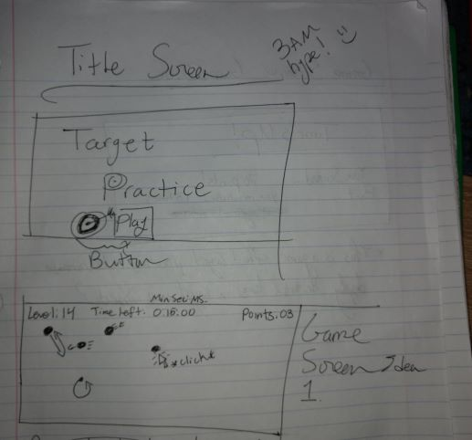
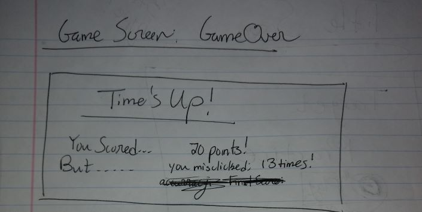

GAME CONCEPT: The game is a simplistic but challenging one; the goal is to click on the circles that appear in the game field each successful click rewarding a point to the player. This will be a task that grows more challenging as you progress by means of a timer, the targets moving after a certain point, and a steadily increasing number of circles. The goal is to get as many points as possible by the end of the run, that being when the player runs out of time.
GENRE: Arcade style game
PLATFORM: Desktop only (requires a mouse)
STORY: This game is purely abstract
AESTHETICS: Aiming for a simple geometric/pixelated point and click game with small chipper sound effects and simple but pleasing visuals
MOCKUPS:
 ABOUT THE DEV: I am a second year Game Design and Development student at RIT, also seeking a minor in Digital Literature and Comparative Media. My skillsets are developing as we speak and include HTML, CSS, JavaScript, C#, and a number of Editing platforms like Photoshop. Interests of mine include Dungeons and Dragons, where I run a home made game with my closest friends (This game really brings out my most creative side).
The goal I had set out to achieve was: to make an accuracy themed game where you earn points based on how many targets you click in one minutes time. The audience I was thinking of was anyone who wanted to work on accurate point and click muscle memory in video games and have it be in a fun game format. I would like to make it simplistic but enjoyable, with more functionality than what was in my previous project.
To meet the requirements of the project I will revamp the screens to resemble a more finished product with a separate idea than that of the baseline code. I will strip the code of all that will no longer be needed and build from there. I will add audio sources for click events, level change, and overall background music. The game will have more and new object behaviors for different kinds of targets.
Integration of the timer has provided multiple challenges in making it work as intended. (The intended funcitonality is to display the current time remaining and have it match when the game is over while also being updated). After much review, the delta time functionality of my PIXIJS game was made a global variable to reduce scope conflicts, and allowing me to better adjust time based events for the game and timing out the game over screen.
Added a self made background image for the game stage and found an amazing royalty free background song, all credit of the music goes to Fesliyan Studios.
Crit Group suggestions that have been implemented:
The high score functionality works as intended, but the time increase power up presented troubles. The addition of a timer changing element meant I needed to readjust the existing timer to work with and not against the powerup.
the song used in Target Practice was made by Fesliyan Studios and the direct link to the song is here: 8-bit-retro-funk Please note that the music is free to use with exceptions, all of which can be found here: Use of Fesliyan Music